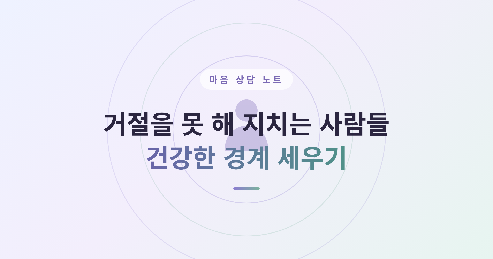
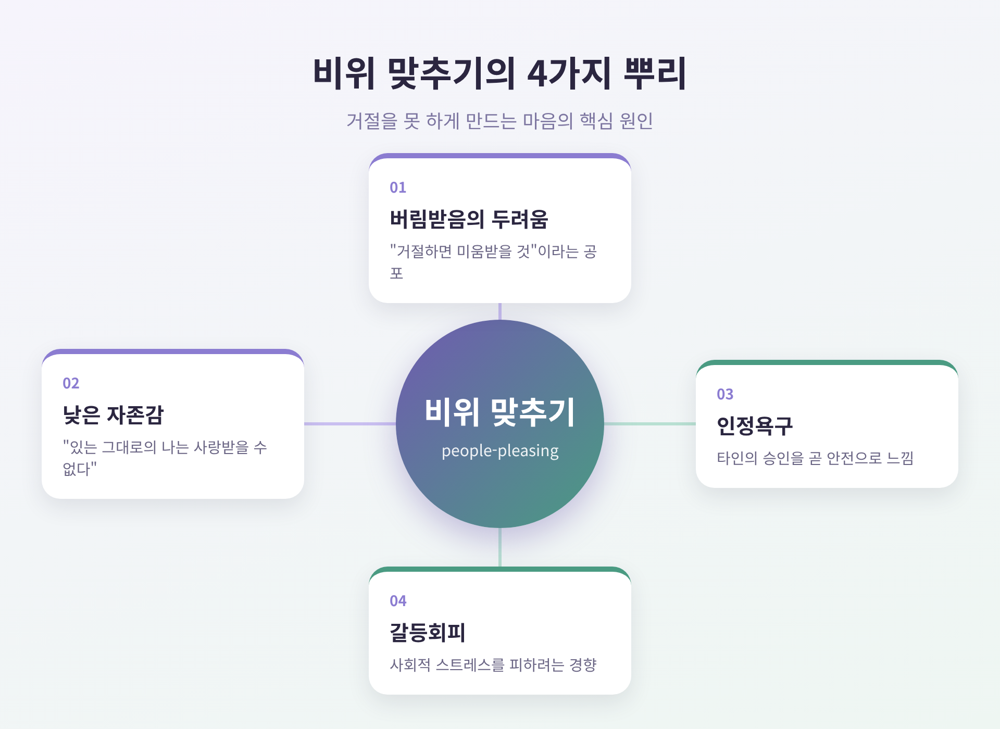
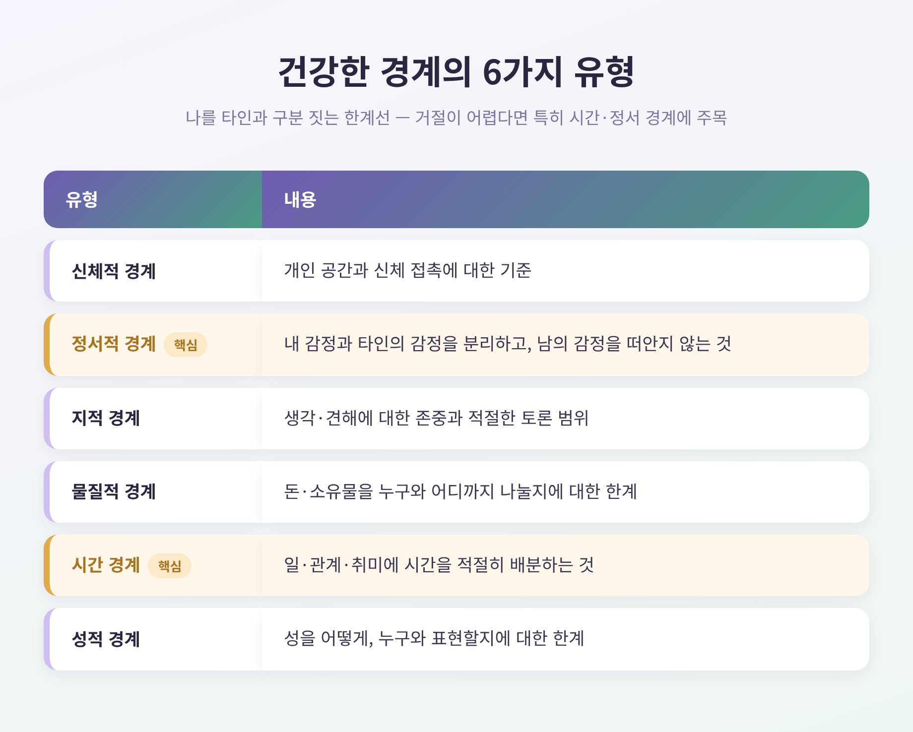
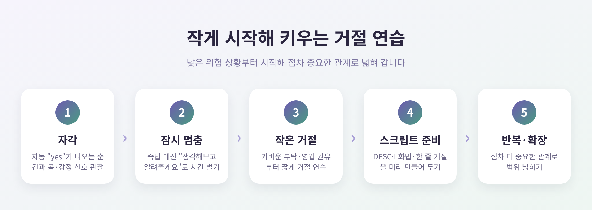

거절을 못 해 지치는 사람들 — 건강한 경계 세우기 연습

이번 글에서는 거절을 못 해 자주 지치는 마음을 다뤄 보겠습니다.
왜 우리는 "아니오"를 어려워하는지, 건강한 경계란 무엇인지, 그리고 죄책감 없이 거절을 연습하는 방법까지 차례로 정리합니다.
세 줄로 먼저 요약하면 이렇습니다. 거절을 못 하는 것은 성격 결함이 아니라 이해 가능한 패턴입니다. 경계는 이기심이 아니라 자기존중입니다. 거절은 배우고 연습할 수 있는 기술입니다.
미리 한 가지 안내를 드립니다. 이 글은 일반적인 심리·상담 정보를 전하기 위한 것이며, 전문적인 상담이나 치료를 대체하지 않습니다. 본문에 나오는 사례는 특정 개인의 이야기가 아니라 일반화해 재구성한 예시입니다. 거절·죄책감·관계의 어려움이 수면, 식사, 업무, 대인관계를 지속적으로 방해하거나 우울·불안·소진이 심하다면, 상담심리사·임상심리사·정신건강의학과 전문의의 도움을 받으시길 권합니다. 위기 상황이라면 정신건강 위기상담 전화(1577-0199)도 기억해 두시면 좋겠습니다.
왜 우리는 거절을 못 할까
거절을 어려워하고 끊임없이 남을 맞추는 행동을 흔히 '사람 비위 맞추기(people-pleasing)'라고 부릅니다.
단순한 친절과는 다릅니다. 자기 욕구를 희생하면서까지 타인의 인정을 앞세우는 패턴입니다.
뿌리에는 몇 가지 마음이 있습니다.
첫째는 거절·버림받음에 대한 두려움입니다. "내가 거절하면 사람들이 나를 싫어할 것"이라는 공포가 끊임없이 인정을 구하게 만듭니다.
둘째는 낮은 자존감입니다. "있는 그대로의 나는 사랑받을 수 없다"는 부정적 자기신념이 그 밑에 깔려 있습니다.
셋째는 인정욕구입니다. 타인의 승인을 곧 안전으로 느낄 때, "예"라고 답하는 것이 불안을 줄이는 수단이 됩니다.
이런 의미에서 비위 맞추기는 본질적으로 일종의 불안 관리 전략인 셈입니다.
여기에 갈등회피 성향이 더해지기도 합니다.
친화성이 높은 사람일수록 사회적 스트레스를 피하려고 비위 맞추기 패턴을 따르는 경향이 있습니다.
흥미로운 단서가 하나 있습니다.
fMRI 연구에서, 사람이 '거절(no)'할 기회에 직면할 때 인지 부조화와 관련된 뇌 영역이 활성화되는 것이 관찰됐습니다.
거절은 단순한 의지의 문제가 아니라 실제로 심리적 불편을 일으킨다는 뜻입니다.

'영합(fawn) 반응' — 한 가지 가능한 배경
거절을 못 하는 패턴을 더 깊이 이해하는 데 'fawn(영합·달래기) 반응' 개념이 도움이 됩니다.
이 개념은 치료사 피트 워커(Pete Walker)가 복합 외상후스트레스장애(C-PTSD) 연구에서 처음 제시했습니다.
투쟁-도피-경직에 이은 네 번째 생존 반응으로, 뇌가 관계적 위협을 감지할 때 비위를 맞춰 위험을 무마하려는 패턴을 말합니다.
이 반응은 주로 어린시절의 반복적 경험에서 형성된다고 봅니다.
아이의 안전이 양육자를 계속 기쁘게 하는 데 달려 있을 때, 아이는 자기 욕구를 억누르고 과도하게 순응하는 법을 배웁니다.
진짜 감정을 표현하는 일이 위험하게 느껴지면, 아이는 자신의 감정과 욕구로부터 단절된 채 타인을 달래는 데 몰두하게 됩니다.
다만 한 가지는 분명히 짚고 싶습니다.
모든 비위 맞추기가 어린시절 외상 때문은 아닙니다.
앞서 본 친화성이나 불안 관리 같은 비외상적 요인도 똑같이 큰 몫을 합니다.
그러니 이는 '한 가지 가능한 배경'으로 열어두는 편이 정확합니다.
희망적인 부분은 이것입니다.
이 반응은 학습된 것이므로, 다시 학습 해제될 수 있습니다.
건강한 경계란 무엇인가
경계(boundary)란 나를 타인과 구분 짓는 한계선입니다.
개인적 경계는 타인에게 허용할 수 있는 행동을 규정하는 한계이자 규칙으로, 나의 신체적·정서적 안녕을 보호합니다.
경계는 보통 여섯 가지 유형으로 나눕니다.
| 유형 | 내용 |
|---|---|
| 신체적 경계 | 개인 공간과 신체 접촉에 대한 기준 |
| 정서적 경계 | 내 감정과 타인의 감정을 분리하고, 남의 감정을 떠안지 않는 것 |
| 지적 경계 | 생각·견해에 대한 존중과 적절한 토론 범위 |
| 물질적 경계 | 돈·소유물을 누구와 어디까지 나눌지에 대한 한계 |
| 시간 경계 | 일·관계·취미에 시간을 적절히 배분하는 것 |
| 성적 경계 | 성을 어떻게, 누구와 표현할지에 대한 한계 |
거절을 못 하는 분에게는 특히 시간 경계와 정서적 경계가 중요합니다.
건강한 경계는 정신건강과 안녕을 지키는 방법이며, 자기존중과 성장의 핵심 도구입니다.
무엇이 받아들일 만하고 무엇이 그렇지 않은지를 정의해, 더 건강한 관계의 토대를 만듭니다.
한 가지 원칙을 덧붙이겠습니다.
경계를 세울 때 과도하게 설명하거나 사과할 필요는 없습니다.
누구나 자신이 원하는 것과 원하지 않는 것을 말할 수 있습니다.

죄책감 없이 거절하는 기술
거절은 타고나는 성향이 아니라 배울 수 있는 기술입니다.
그 출발점은 자기주장(assertiveness)입니다.
자기주장은 수동과 공격 사이의 건강한 중간 지점입니다.
내 권리를 지키되 타인의 권리도 존중합니다.
자기 욕구를 억누르는 것도, 타인을 침해하는 것도 아닌 자리입니다.
자기주장 훈련의 상당 부분은 인지행동치료(CBT)에 기반합니다.
"내가 말하면 무례하다고 생각할 거야" 같은, 거절을 가로막는 생각을 먼저 알아차리고 점검하는 것이 핵심입니다.
행동을 바꾸기 전에 그 행동을 막는 자동사고를 들여다보는 셈입니다.
대표적인 틀이 DESC 스크립트입니다.
- Describe(묘사): 상황을 객관적 사실로만 묘사합니다. "지난번 모임 준비를 제가 혼자 다 했어요."
- Express(표현): 내 감정을 'You'가 아닌 'I' 화법으로 표현합니다. "그때 좀 부담스럽고 지쳤어요."
- Specify(요청): 원하는 구체적 변화를 요청합니다. "다음엔 준비를 나눠서 했으면 해요."
- Consequences(결과): 변화가 가져올 긍정적 결과를 언급합니다. "그러면 둘 다 모임을 더 즐길 수 있을 거예요."
거절할 때 미리 준비해 둘 한 줄 거절도 유용합니다.
매일 소리 내어 두 개씩 일주일간 연습하며, 어떤 표현이 가장 자연스러운지 확인해 보시면 좋겠습니다.
맥락이 필요하면 거절과 대안을 짝지을 수 있습니다.
"오늘은 어려워요. 다음 주엔 도울 수 있어요." 이렇게 말입니다.
기억할 한 가지는 이것입니다.
"아니오(No)"는 그 자체로 완전한 문장입니다.
장황한 변명이 늘 필요한 것은 아닙니다.
다만 균형도 필요합니다.
관계의 맥락에 따라 짧은 이유나 대안을 곁들이면 거절이 한결 부드러워지기도 합니다.
무조건 단호하게가 아니라, 상황에 맞게 고르시면 됩니다.
작게 시작해 키우는 연습법
처음부터 가장 어려운 관계에 시도하지 않는 것이 좋습니다.
낮은 위험 상황부터 연습하고, 점차 어려운 상황으로 넓혀 갑니다.
예전에는 부탁이 들어오면 곧장 "네"라고 답했습니다.
지금은 잠시 멈추고 "생각해보고 알려줄게요"로 시간을 법니다.
이 작은 멈춤 하나가 즉각 수락 습관을 끊는 첫걸음이 됩니다.
단계로 정리하면 이렇습니다.
- 자각: 어떤 상황에서 자동으로 "yes"가 나오는지, 그때의 몸과 감정 신호(가슴 답답함, 불안)를 관찰합니다.
- 잠시 멈춤: 즉답 대신 시간을 법니다.
- 작은 거절부터: 가벼운 부탁이나 영업 권유처럼 낮은 위험 상황에서 짧은 거절을 연습합니다.
- 스크립트 준비: DESC, I 화법, 한 줄 거절을 미리 만들어 둡니다.
- 반복·확장: 연습한 뒤 점차 더 중요한 관계로 넓힙니다.
끝없는 논쟁으로 끌어들이는 상대에게는 '고장난 레코드(broken record)' 기법이 효과적입니다.
먼저 혼자 종이에 하고 싶은 말을 전부 쏟아 씁니다.
그 내용을 짧고 명확한 한 문장으로 압축합니다. "그 얘기는 하고 싶지 않아요." 같은 식입니다.
상대가 그 화제를 꺼낼 때마다 같은 메시지를 차분하고 친절하게 반복합니다.
비결은 하나입니다. 감정에 휩쓸리지 않고 중립적인 태도를 지키는 것입니다.
거울 앞에서, 혹은 믿을 만한 사람과 역할극으로 거절 장면을 미리 연습해 두는 것도 도움이 됩니다.

거절 뒤에 밀려오는 죄책감 다루기
거절을 잘했더라도, 그 뒤에 죄책감이 밀려올 수 있습니다.
죄책감은 경계를 세운 뒤 가장 흔한 정서적 여진입니다.
특히 늘 타인을 우선하도록 길들여진 사람에게 강하게 옵니다.
심리학에서는 이를 대인관계적 죄책감이라 부릅니다.
건강하게 자기를 보호했을 뿐인데도 타인의 감정에 책임감을 느끼는, 학습된 정서 패턴입니다.
그래서 이 죄책감은 종종 '거짓 죄책감'에 가깝습니다.
도덕적 나침반이 아니라 학습된 반응인 것입니다.
죄책감이 올라오면 스스로 한 가지를 물어보시길 권합니다.
"내가 용서를 구하거나 관계를 회복해야 할 만큼 정말 잘못한 게 있는가?"
사과하거나 회복할 일이 없다면, 죄책감에 반사적으로 반응하지 말고 내 가치에 따라 행동합니다.
생각을 바꾸는 재구성도 도움이 됩니다.
죄책감을 "내가 뭔가 잘못했다"는 증거로 보지 마십시오.
대신 "내가 건강하지 않은 패턴을 깨고 있다"는 증거로 보시면 좋겠습니다.
자기연민과 마음챙김도 곁에 두면 좋습니다.
내면의 비판자를 멈추고 죄책감을 친절함으로 대체하는 연습입니다.
반복할수록 경계는 위협이 아니라 자연스러운 것으로 느껴집니다.
경계는 자주 세울수록 죄책감이 줄어듭니다.
시간이 지나며 회복탄력성이 쌓입니다.
정리하면 이렇습니다.
거절을 못 하는 것은 성격의 결함이 아니라, 인정욕구와 갈등회피, 낮은 자존감, 때로는 어린시절 경험에서 비롯된 이해 가능한 패턴입니다.
건강한 경계는 이기심이 아니라 자기존중이며, 관계를 지키는 토대입니다.
자기주장은 배우고 연습할 수 있는 기술이고, 죄책감은 잘못의 증거가 아니라 변화의 증거일 수 있습니다.
— 작게 시작해 반복하라.
그것으로 충분하지 않은 날도 있을 것입니다.
어려움이 오래 이어진다면, 혼자 버티기보다 전문가의 도움을 받는 것이 현명한 선택입니다.
오늘 단 한 번이라도 "생각해보고 알려줄게요"라고 말할 수 있다면, 이미 경계 세우기는 시작된 셈입니다.